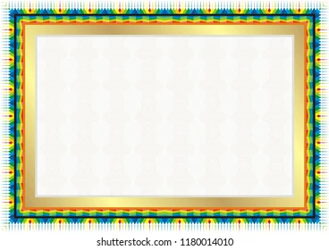

La imagen original para todos los ejemplos

Ejemplo de Imagen como Borde (usando 40 round)
Imagen como Borde
Ejemplo de Imagen como Borde (usando 40 stretch)
Imagen como Borde
Ejemplo de Imagen como Borde (usando 10% round )
Imagen como Borde
Ejemplo de Imagen como Borde (usando 20% round)
Imagen como Borde